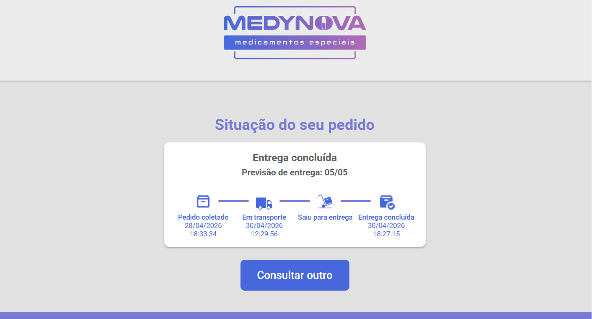
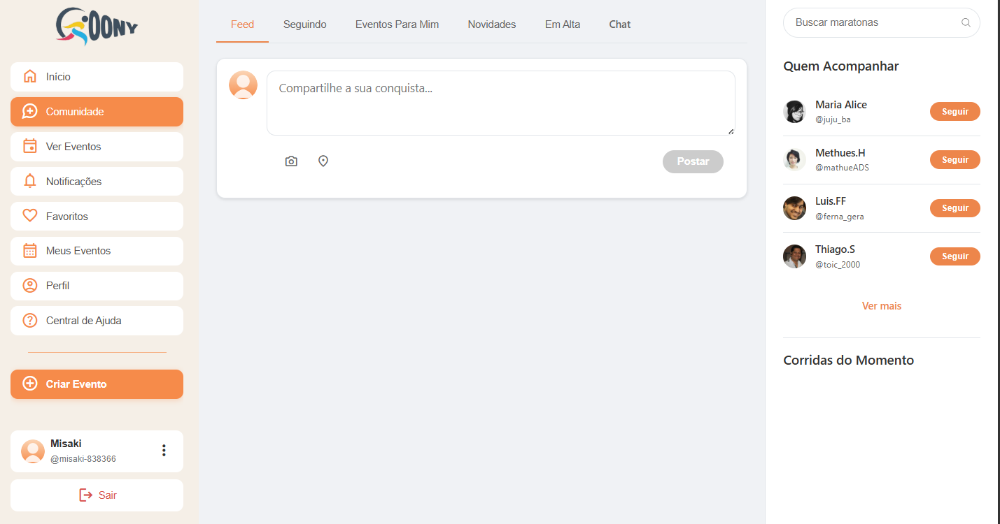
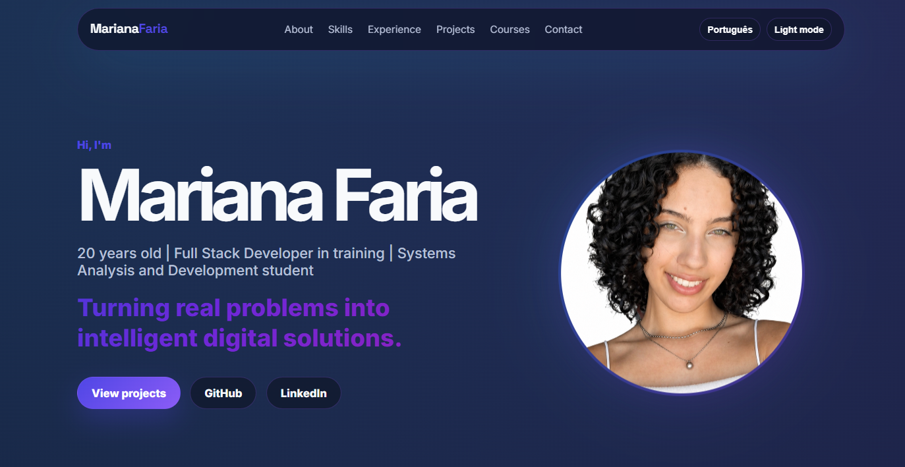

Front-end
HTML
CSS
JavaScript
Olá, eu sou
Transformando problemas reais em soluções digitais inteligentes.
Sobre mim
Sou Mariana Faria, tenho 20 anos e sou estudante de Análise e Desenvolvimento de Sistemas. Minha trajetória na tecnologia começou através da curiosidade, mas se transformou em paixão quando percebi o impacto real que soluções digitais podem causar na vida das pessoas e das empresas.
Atualmente atuo na Medynova Medicamentos Especiais, conciliando atividades comerciais com desenvolvimento de soluções internas. Entre elas, participei da criação de um sistema de rastreamento de pedidos para melhorar a experiência dos clientes e otimizar processos da empresa.
Também tenho experiência com ensino e monitoria em tecnologia através da ONG O Portal, apoiando jovens em situação de vulnerabilidade social no aprendizado de informática e programação web. Essa experiência fortaleceu minha comunicação, empatia e capacidade de trabalhar em equipe.
Tecnologias
HTML
CSS
JavaScript
Python
FastAPI
Django
Node.js
Java
JSON
MySQL
SQLite
Git
GitHub
Figma
Ubuntu
Scrum
VS Code
AWS
Experiência
Atuação com atendimento a clientes, apoio em cotações, organização de demandas comerciais e suporte a processos internos. Também participei do desenvolvimento de uma solução real de rastreamento de pedidos para otimizar a rotina da empresa.
Atuação como educadora social, auxiliando crianças e adolescentes em situação de vulnerabilidade social no aprendizado de informática básica, Word, PowerPoint e primeiros contatos com tecnologia.
Apoio aos alunos no curso de Programação Web, auxiliando em dúvidas sobre HTML, CSS, JavaScript, lógica de programação e boas práticas no desenvolvimento front-end.
Projetos

Sistema desenvolvido para uma empresa real, permitindo que clientes acompanhem a situação dos pedidos por nota fiscal, com integração logística, banco de dados e atualização de status.

Plataforma social esportiva desenvolvida em equipe durante o programa Transforme-se/Senac, com funcionalidades de comunidade, eventos, perfil, notificações e chat privado.

Portfólio profissional one page, responsivo, bilíngue, com modo claro e escuro, animações e foco em recrutamento tech.
Cursos & Formação
UNIT PE
Cursando • 2026 - 2028Serasa Experian + Gerando Falcões + Senac
280hSenac Pernambuco
200hONG O Portal
80hSenac
40hSenac
20hSenac
20hPrograma introdutório com foco em cloud computing e fundamentos de AWS.
Programa de formação em desenvolvimento back-end com JavaScript, Node.js e MySQL, voltado para capacitação prática e preparação para o mercado de tecnologia.
Contato
Estou aberta a oportunidades de estágio, conexões na área de tecnologia e projetos que unam desenvolvimento, design e impacto real.